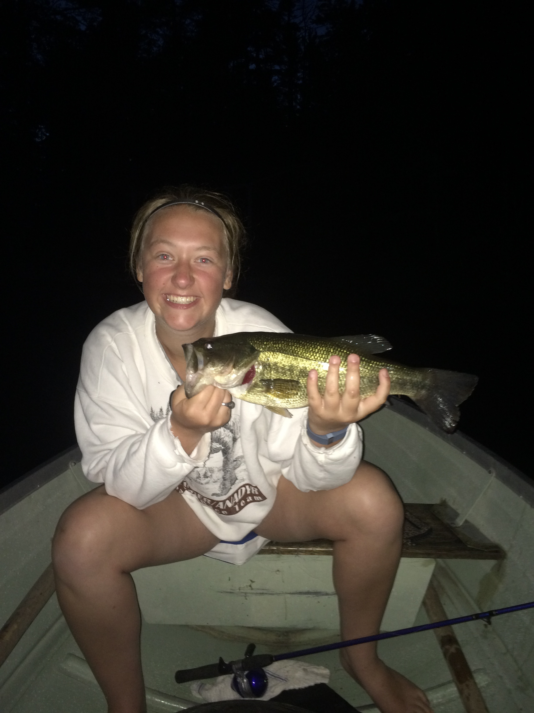
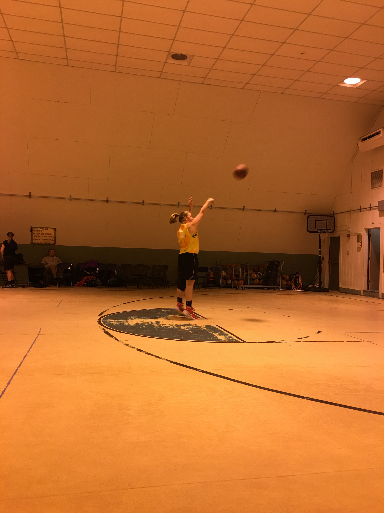

My name is Emily Jordan, I was raised in Hollis, Maine; which is about a 45 minute drive southwest of Portland. I currently live in Orono, and attend the University of Maine. While attending the University, I am studying International Finance and Spanish Language and Culture.
My hobbies include most activities outside including kayaking, camping, fishing and hiking, which are my favorites! I have also played basketball for 13 years and it is one of my greatest passions! Living in Maine has given me many opportunities, it is a beautiful state and I absolutely love living here!
 To learn more about my interest in spanish and traveling along with a gallery of photos from my trip, Click here
To learn more about my involvement within my community, Click here
To learn more about my work experiences, Click here